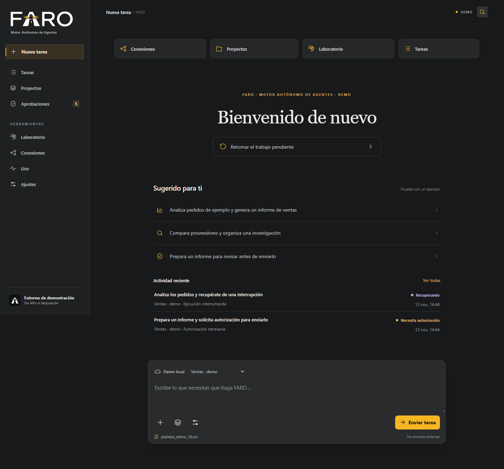
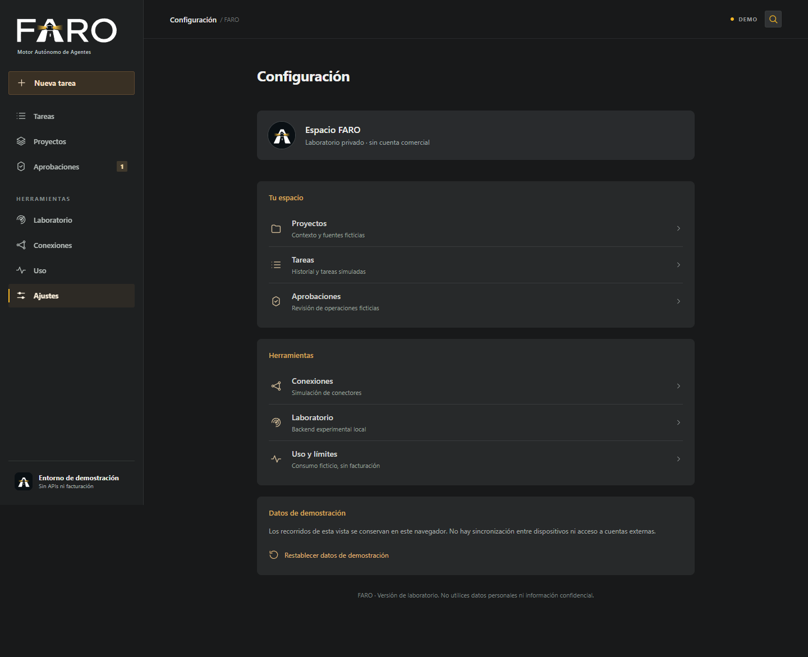
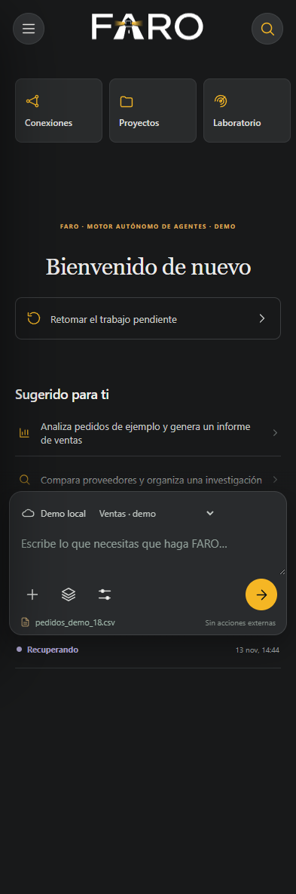

Interfaz web
Tareas, proyectos, aprobaciones, conexiones y seguimiento responsive, con acceso privado.
FARO es una plataforma de agentes de IA en desarrollo con landing pública e interfaz web protegida. Su laboratorio integra gestión de tareas, historial persistente, controles y verificación de resultados. El servicio comercial completo sigue pendiente de certificación.

Captura real · demo CP072Capturas verificadas del prototipo de laboratorio CP072 (13 de noviembre de 2026). No son imágenes de cuentas comerciales ni de clientes reales.


Tareas, proyectos, aprobaciones, conexiones y seguimiento responsive, con acceso privado.
TaskLedger persistente, API experimental y tareas acotadas con modelos reales locales y verificación independiente.
Pruebas de permisos, límites, aprobación, trazabilidad y recuperación, sin prometer autonomía comercial aún no certificada.
Estado en noviembre de 2026: landing pública en faroia.app; interfaz de aplicación protegida con Cloudflare Access en app.faroia.app. El backend y los agentes siguen en pruebas; no hay beta SaaS comercial abierta.
Un proyecto en evolución, con decisiones de diseño y pruebas documentadas. El trabajo se presenta por su estado real, no como un producto ya comercializado.
Volver al portfolio ↗